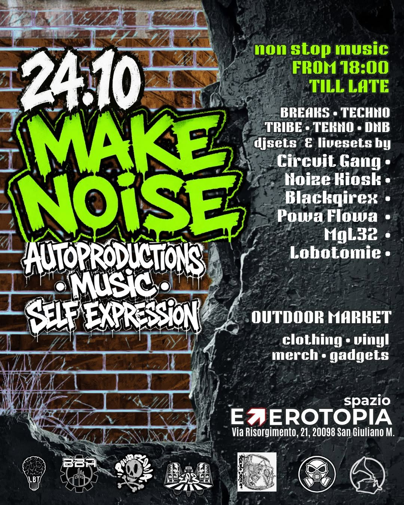

EVENT [ NEXT ]
MAKE NOISE — 24.10.26
We finally made it: MAKE NOISE is happening.
In a world that often wants us to remain spectators, we choose to create, participate, express ourselves and make noise.
A day and night dedicated to DIY culture, music and self-expression, bringing together an independent market, DJ sets and dancefloor.
Doors and music from 18:00, with an outdoor market featuring clothing, vinyl, merch, gadgets and independent productions by:
🛍️ E23 Productions
Instagram / e23produzioni
🛍️ Circuit Records
circuitrecords.it
🛍️ Blackqirex Records
Instagram / blackqirex_daveqirex
🛍️ Noize Kiosk Records
Instagram / noize_kiosk
🛍️ El Bahul del Pirata
Instagram / elbahuldelpirata
+ more. 🛠️💿
The noise doesn't stay inside: music will also run through the outdoor market throughout the evening.
From 18:00 till late, non-stop music across techno, tech house, jungle, D'n'B and tribe tekno. 🔥
LINE UP
💣 Radio A (Lobotomie) — DJ set / Techno
💣 Grime Vice (PowaFlowa) — DJ set / DnB & Jungle
💣 Kk1 (Noize Kiosk Records) — DJ set / Tekno
🚨 Sbume (Circuit Records) — Birthday set / Tekno
💣 Qirex (Hulabulah) — DJ set / Tekno
💣 MgL32 (B.B. Anonymous) — DJ set / Tekno
🎟️ Entry: €5
Your contribution helps support the artists, the production of the event and Spazio Eterotopia.
The market remains an independent space within the event: come early, have a look around, explore the stalls and directly support DIY productions and the people behind them. 🖤
📍 Spazio Eterotopia
Via Risorgimento 21, San Giuliano Milanese.
MAKE NOISE. RESPECT THE SPACE.